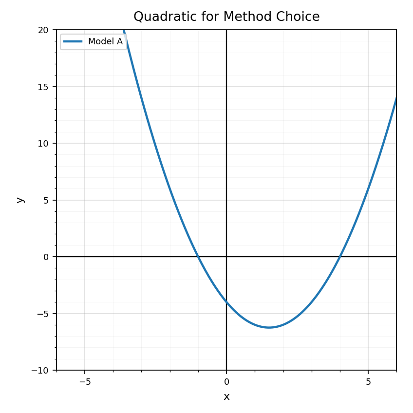

Practice Set 8.4.1
Spiral Plan and DoK Balance
Unit 8.4: Modeling Investigation
4 current questions, mostly DoK 1-2
Unit 7.4: Comparing Function Families
8 questions: 4 DoK 1, 2 DoK 2, 1 DoK 3, 1 DoK 4
Unit 6.4: Choosing and Defending Solution Methods
4 questions, mostly DoK 1-2
Practice Set 1: This is a section-aligned spiral: 8.4 with 7.4 and 6.4. It is not a previous-section spiral.
Use Data Set A. Name the representation shown and identify one feature that helps you choose a model type.

Which term means the difference between an observed value and a predicted value?
- coefficient
- residual
- vertex
- multiplier
Use Data Set B. Does a linear or curved model seem more reasonable? Give one piece of evidence from the data display.

A model predicts $87.6$ people will attend an event. Explain how that prediction should be interpreted in context.
Use the graph. Which relationship appears linear, and which appears exponential?

Which table is more likely exponential?
| x | 0 | 1 | 2 | 3 |
|---|---|---|---|---|
| Table A | 4 | 7 | 10 | 13 |
| Table B | 4 | 8 | 16 | 32 |
Choose the function family for $y=7(1.2)^x$: linear, quadratic, or exponential.
Choose the function family for $y=x^2+7$: linear, quadratic, or exponential.
Use the comparison graph. Which relationship grows faster later in the displayed window? Explain briefly.
Compare $y=5x+10$ and $y=10(1.25)^x$ by evaluating both when $x=0$, $x=2$, and $x=4$.
A student says Relationship B is better because it is higher at the end. What other evidence should they consider before choosing a model?
Create one table that looks linear and one table that looks exponential. Explain how the differences show the model type.
Which method would likely be most efficient for $x^2-9=0$: factoring, completing the square, or the quadratic formula?
Which method always works for any quadratic equation with real or complex solutions?
Choose an efficient method and solve: $$x^2-7x+12=0$$
Use the graph to choose a solution method that could verify the visible zeros quickly. Explain your choice.
